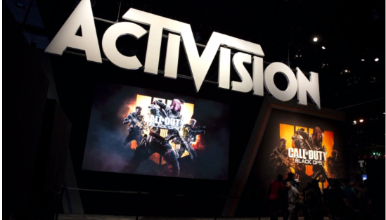
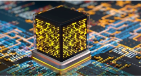

Microsoft to buy Activision Blizzard for $68.7 billiom
Amanda Silberling
The Latest
Snapchat says it's getting better at finding illicit drug dealers before users do
Taylor Hatmaker
11:15 AM PST | January 18, 2022
Snapchat has faced incresing criticism in recent years as the opiod crisis plays out on social media, often with tragic results. In October, an NBC investigation reported that the stories of a number...

Will quantum computing remain the domain of the specialist VC?
Maria Lepskaya
11:06 AM PST | January 18, 2022
Despite all the buzz, quantum investments are still not mainstream: there were about 90 quantum investments in 2021.
